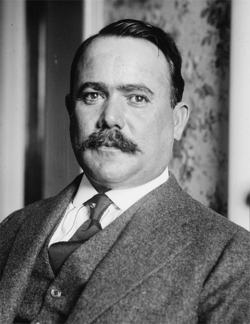
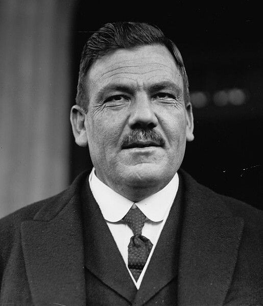
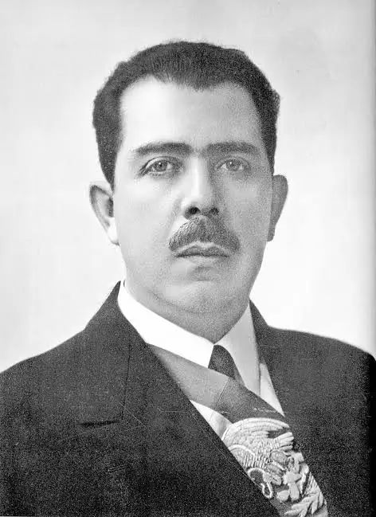

Analiza los cambios políticos, sociales y económicos que ocurrieron después de la Revolución Mexicana y la construcción del Estado mexicano moderno.
Después de la Revolución Mexicana, el país inició un proceso de reconstrucción para establecer nuevas instituciones y organizar la vida política y social. El gobierno buscó crear estabilidad y responder a algunas de las demandas surgidas durante el movimiento revolucionario.
Durante este periodo se impulsaron cambios relacionados con la educación, la economía, los derechos sociales y la organización del Estado mexicano.
Comprender las transformaciones políticas, sociales y económicas del México posrevolucionario, identificando la forma en que se construyeron nuevas instituciones y estructuras del Estado mexicano.
En esta progresión conocerás los cambios que ocurrieron después de la Revolución Mexicana y cómo el país buscó recuperar estabilidad mediante nuevas leyes, instituciones y proyectos sociales.
También analizarás la importancia de la educación, la organización política y los programas de desarrollo en la construcción del México moderno.

Presidente de México entre 1920 y 1924. Impulsó la reconstrucción del país después de la Revolución.

Durante su gobierno se fortalecieron instituciones políticas y se creó el Partido Nacional Revolucionario.

Presidente que impulsó reformas sociales, educativas y la expropiación petrolera de 1938.
Inicio del periodo de reconstrucción después de la Revolución.
Creación del Partido Nacional Revolucionario.
Inicio del gobierno de Lázaro Cárdenas.
Expropiación petrolera en México.
La educación fue uno de los principales proyectos del México posrevolucionario para buscar una sociedad con mayor acceso al conocimiento.
El México posrevolucionario fue una etapa de reconstrucción y creación de instituciones. Durante este periodo se impulsaron cambios sociales, políticos y económicos que dieron forma al Estado mexicano moderno.